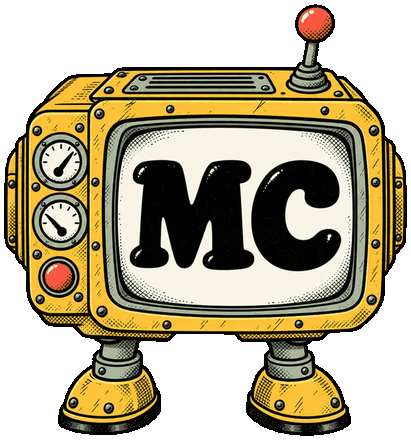

Tools.
Small tools that actually run in your browser, no signup and no email gate. Open any one and the number is real, computed on the spot. Nothing you type ever leaves this page.

Money & size
TOOL/01
AI cost calculatorWhat a month of AI actually costs, on rates you can edit.editable rate table
Open ↗
TOOL/02
Fits-in-context checkerWhether your document fits a model's window or needs splitting.five window sizes
Open ↗
TOOL/03
Subscription vs APIYour usage, both prices, one answer: which way is cheaper and where the lines cross.shares your edited rates
Open ↗
The words
TOOL/05
AI-slop detectorPaste text; a public rule list counts the AI tells and stamps a slop score, every flagged line shown.English and Czech rules
Open ↗
TOOL/06
Prompt tightenerStrips the filler it can prove is filler, flags the vague asks it cannot fix, shows the word drop. Deletion only.never rewrites your meaning
Open ↗
TOOL/07
Difficult-email prompt builderSix questions about the email you dread; a copy-ready prompt with your facts and hard lines baked in.builds the prompt, your AI runs it
Open ↗
No tools match that. Try another word or clear the filter.
Nothing you type leaves this page.
Every tool here runs in your browser. No signup, no email gate, no server behind it. Close the tab and it is gone.
Prompts that can help you →